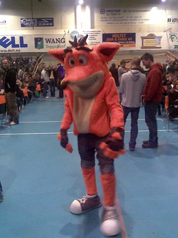

Crates come in several varieties and can be found in abundance across Crash's world. Most crates will assist the player's journey through the game, providing Wumpa Fruit, additional hit points in the form of Aku Aku masks and extra lives. In most games, players will be awarded a gem if they break all the crates in a level. TNT and Nitro Crates are the only boxes that can damage Crash. TNT Crates have a three-second fuse when jumped on, but Nitro Crates will explode instantly upon any contact with Crash or anything else that runs into them. Switch Boxes (distinguished by an exclamation mark) are used to make previously invisible crates appear. A green Switch Box will detonate all Nitro Crates in the level.  Crates marked with a "C" are checkpoints that Crash will return to if he is killed during play. Locked Crates are protected by a metal casing that can only be destroyed with Crash's body slam move, while Spring Crates allow him to reach high up areas by bouncing on them. Slot Boxes rapidly switch between multiple types of crates, and if they are not broken in time, will become metallic and indestructible. Time Boxes are a special crate found exclusively in Time Trial mode. They will freeze the clock for the number of seconds displayed on the box, increasing the player's chance of beating the time trial.